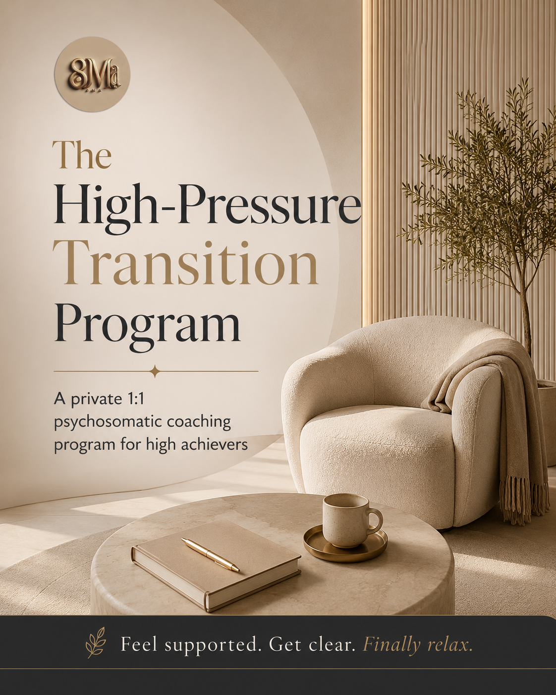

The High-Pressure Leadership Reset.
The High-Pressure Leadership Reset is a 3-month private coaching program for founders, executives, and senior leaders navigating high-stakes transitions. When real pressure arrives - raising capital, scaling through uncertainty, managing disruption, or carrying a growing family and business simultaneously - stress moves from the mind into the body and into subconscious patterns that shape decisions, relationships, and leadership.
This program combines psychosomatic coaching, subconscious pattern work, and money coaching to help you regain clarity under pressure, stabilize your nervous system, and lead through uncertainty without it costing your health, your marriage, or the life you are building.

Eight private sessions over three months.
Plus ongoing Voxer support between sessions, as needed.
Each session works at a deep level, and the body may need time to integrate the work. Many participants feel relief right after a session, but it is also normal to feel physically tired as your system processes the shift. Full integration may take up to about three weeks.
Founders, executives, and senior leaders carrying significant responsibility.
This program is designed for healthy, high-functioning founders and executives - typically in their 30s, 40s, or 50s - who are the primary financial providers for their families and are navigating pressure that comes with real stakes: scaling a company, managing market disruption, raising capital, or sustaining high performance across both business and family life simultaneously.
This program is not a substitute for mental health care, psychotherapy, or medical treatment. If you are currently under medical or psychological care, please consult your doctor before enrolling.
A Structured Process Through Two Essential Dimensions.
Focused on how pressure affects the body, emotions, subconscious patterns, and decision-making.
Focused on navigating responsibility, uncertainty, relationships, and long-term stability while continuing to perform.
Overthinking and unclear decisions under pressure.
Difficulty thinking clearly when important business, money, or family decisions need to be made.
Fear of financial instability and uncertainty.
Stress about funding, income, layoffs, AI disruption, market shifts, or sustaining the lifestyle and responsibilities people depend on.
Physical symptoms caused by chronic pressure.
Chest tightness, exhaustion, tension, headaches, shallow breathing, poor sleep, emotional heaviness, or constant urgency.
Carrying too much responsibility alone.
Being the main provider, decision-maker, or emotional support system for family, employees, or partners.
Difficulty slowing down, relaxing, or disconnecting from work.
Feeling guilty resting, constantly thinking about work, and staying mentally "on" even outside business hours.
Work pressure affecting relationships and personal life.
Mental and emotional spillover into marriage, parenting, family dynamics, and difficulty being fully present at home.
Subconscious patterns driving stress and pressure responses.
Patterns around over-responsibility, control, fear of failure, fear of collapse, perfectionism, and emotional suppression.
Major life and business transitions becoming emotionally unsustainable.
Scaling a company, raising capital, career uncertainty, divorce, becoming a parent, caregiving, or continuing to succeed externally while internally feeling overwhelmed and depleted.
Take the baseline assessment.
Every participant takes the Joy vs Pressure assessment before starting and again at the end. The work is real, and so is the shift - but you only get to see it if you measure where you began.
Joy vs Pressure
An 8-question read on where you currently sit on the joy-to-pressure spectrum. 2 minutes. Free.
Take the BaselineAfter the program, you'll take it again - and we'll send you both results side by side.
What clients experience.
Clearer decision-making under pressure.
Clients stop reacting impulsively, overthinking, or freezing when high-stakes decisions need to be made.
Reduced physical tension and internal pressure.
Less chest tightness, urgency, emotional heaviness, shallow breathing, and constant mental overload.
Greater emotional stability during uncertainty.
Clients feel more grounded and steady even when business, money, or family situations are changing.
Better boundaries between work and personal life.
Less mental spillover into marriage, parenting, and relationships. More presence at home.
Understanding the root cause of recurring pressure patterns.
Clients identify subconscious patterns driving stress, reactions, over-responsibility, and fear around money, success, or stability.
Improved ability to regulate stress without shutting down or overworking.
Clients learn how to calm the body and nervous system instead of automatically pushing harder.
Increased confidence in handling uncertainty.
Instead of constantly needing guarantees, clients develop trust in their ability to navigate change and adapt clearly.
A more sustainable way of succeeding.
Clients continue performing and growing professionally without sacrificing their health, relationships, or quality of life.
The High-Pressure Leadership Reset.
Format: 8 private sessions over 3 months, plus ongoing Voxer support between sessions.
Investment: $2,000 paid in full, or 3 payments of $750.
Availability: Limited. This is private 1:1 work - spots open as capacity allows.
Enroll & See DetailsNot sure yet? Book a Pressure Pattern Breakthrough Session first - a 90-minute private session to see if this is the right fit.
Clients stop living in constant internal pressure.
They learn how to stay clear, stable, and effective even when nothing around them feels certain.
New: Self-paced. Pre-recorded. Built to fit a real schedule.
Format: Self-paced video lessons + downloadable practice guides. Roughly 3–4 weeks if you move steadily; longer is fine too.
Time commitment: 30–60 minutes per week. Designed to fit between a meeting and a school run.
Access: Lifetime access to all current and future updates.
Investment: Priced as an entry session - see booking page for details.
Book a Breakthrough SessionSchedule directly via Calendly. After booking you will receive a confirmation with the video link.
What to know before enrolling.
What is included in the program?
8 private 1:1 sessions over 3 months, plus ongoing Voxer support between sessions. Sessions work through psychosomatic regulation, subconscious pattern work, nervous system tools, decision-making under pressure, and money/responsibility patterns.
How is this different from executive or business coaching?
Most executive coaching works at the level of strategy and skills. This program works below that — on the nervous system patterns and subconscious responses driving chronic pressure. It's not about working harder or smarter. It's about removing the root of what makes pressure unsustainable.
Do I need to be in crisis to join?
No. This program is for high-functioning founders and executives who are succeeding externally but eroding internally. The best time to do this work is before it becomes irreversible — not after.
What results can I expect?
Clearer decision-making under pressure, reduced physical tension and urgency, greater emotional stability during uncertainty, better separation between work and personal life, and a deeper understanding of the subconscious patterns behind your stress responses.
How do I know if I'm ready?
Start with a Pressure Pattern Breakthrough Session — a focused 90-minute session to identify your dominant pattern and whether the full program is the right next step for you.